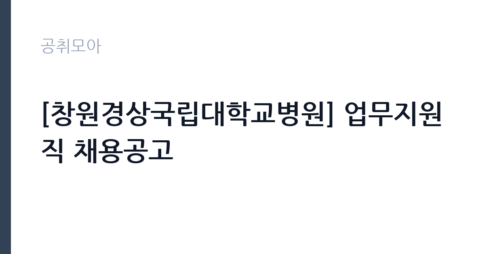

[공공기관] [창원경상국립대학교병원] 업무지원직 채용공고
경상국립대학교병원 · 경남 · 마감 2026-11-04 (D-6) · 출처 잡알리오

한눈에 보는 모집 조건
| 기관 | 경상국립대학교병원 |
|---|---|
| 공고명 | [창원경상국립대학교병원] 업무지원직 채용공고 |
| 고용형태 | 정규직 |
| 근무지 | 경남 |
| 게시일 | 2026-10-29 |
| 마감일 | 2026-11-04 (D-6) |
지원자격, 이렇게 읽으세요
- 시설관리(건축, 조경): 건축 또는 조경 관련 기능사 이상의 자격증 소지자(국가기술자격증 및 국가전문자격증에 한함)
- 시설관리(전기): 전기 관련 기능사 이상의 자격증 소지자 (국가기술자격증 및 국가전문자격증에 한함)
- 전체 공통 응시자격
정규직 채용은 기간의 정함이 없는 근로계약을 전제로 합니다. 수습 기간을 두고 평가한 뒤 정규직으로 확정하는 절차가 일반적이며 기관의 인사 규정과 임금 체계를 적용받습니다. 이번 공고는 경상국립대학교병원이 직접 진행하는 자체 전형입니다. 업무지원직은 모집분야별로 요구 자격이 다르게 제시되므로, 본인이 지원할 분야의 요건을 정확히 확인해야 합니다. 공통 요건으로 연령 기준과 병역 요건, 병원 인사규정상 결격사유가 적용됩니다. 사무 분야는 문서 작성과 엑셀 활용이, 현장 분야는 체력과 안전 수칙 준수가 실질적인 평가 요소입니다. 경력은 증명서로 입증해야 하며, 우대 사항은 증빙이 없으면 반영되지 않습니다. 제출서류는 공고문에 적힌 순서대로 정리하면 담당자가 확인하기 쉽습니다. 경력 요건은 총 경력이 아니라 해당 직무 경력만 인정하는 경우가 있으니, 증명서의 직무 기술을 함께 확인하십시오. 자격증은 유효 기간과 등록 상태를 확인해야 합니다. 갱신이 필요한 자격이라면 갱신 여부를 먼저 점검하십시오. 이 공고 원문에 적힌 응시 조건 문구는 '시설관리(건축, 조경): 건축 또는 조경 관련 기능사 이상의 자격증 소지자(국가기술자격증 및 국가전문자격증에 한함)' / '시설관리(전기): 전기 관련 기능사 이상의 자격증 소지자 (국가기술자격증 및 국가전문자격증에 한함)'입니다. 문구를 그대로 읽고 본인 해당 여부를 하나씩 표시해 두면 서류 단계에서 탈락하는 일을 줄일 수 있습니다.
이 공고의 포인트
이 건은 경상국립대학교병원이 같은 시기에 낸 5개 모집분야 가운데 업무지원직 직무입니다. 다른 직무 공고와 요건이 다르므로 지원 전에 모집분야 표를 대조해야 합니다. 이 공고의 첫 번째 포인트는 고용 형태입니다. 수습 기간 평가를 통과하면 기간의 정함이 없는 신분이 되어 고용이 안정됩니다. 두 번째는 업무 범위가 명확하다는 점입니다. 업무지원직 직무로 채용되므로 배치 이후 담당 업무가 크게 흔들리지 않습니다. 세 번째는 근무지입니다. 경남 지역 근무로 수도권 공고에 비해 지원자 분포가 넓지 않아 상대적으로 경쟁이 분산되는 경우가 있습니다. 선발 절차가 단순한 편이어서 서류와 면접 준비에 집중할 수 있습니다. 선발 인원은 공고문에 명시되어 있으니 모집분야 항목을 함께 확인하십시오.
전형은 어떻게 진행되나
채용 절차는 공고문에 안내된 순서대로 진행되며, 서류 접수 마감 후에는 추가 접수나 서류 보완이 이뤄지지 않는 것이 원칙입니다. 서류심사에서는 응시자격과 제출서류의 형식 요건을 기계적으로 확인하므로, 경력 증명서의 기간과 직무 내용이 공고의 요건과 정확히 맞아야 합니다. 면접은 지원자 수에 따라 집단면접과 개별면접으로 나뉘고, 직무 관련 질문과 상황 대응 질문이 함께 나옵니다. 합격자 발표는 개별 통보 또는 홈페이지 게시로 이뤄지며 이후 임용 절차가 진행됩니다. 동점자 처리 기준이 공고문에 명시되어 있으니 배점 항목을 미리 확인해 두십시오.
원문에서 확인한 전형 방식
1. 시설관리(건축, 조경): 건축 또는 조경 관련 기능사 이상의 자격증 소지자(국가기술자격증 및 국가전문자격증에 한함) 2. 시설관리(전기): 전기 관련 기능사 이상의 자격증 소지자 (국가기술자격증 및 국가전문자격증에 한함) 3. 전체 공통 응시자격 가. 입사지원서 접수 마감일 현재 만 18세 이상이면서 60세 미만인 자 나. 남자인 경우, 입사지원서 접수 마감일 현재병역을 마쳤거나 면제된 자 다. 본원 인사규정 제24조(결격사유)에 해당되지 않는 자
이런 분께 추천해요
- 지원 분야의 요건을 충족하는 분
- 사무와 현장 업무를 함께 수행할 수 있는 분
- 부서 배치와 교대 근무를 수용할 수 있는 분
지원 전 체크리스트
- 응시자격 요건과 경력 기준을 충족하는가 — 경력은 증명서로 입증해야 합니다
- 수습 기간과 정규직 전환 조건을 확인했는가
- 제출서류 목록을 모두 준비했는가 — 누락 시 서류 단계에서 탈락합니다
- 접수 마감 2026-11-04 이전에 접수 방식을 확인해 제출했는가
모집 일정과 제출 타이밍
공고 게시일은 2026-10-29, 접수 마감은 2026-11-04입니다. 준비 기간은 약 6일로 서류 준비와 자격 증빙을 함께 처리하기에는 넉넉하지 않은 편입니다. 첫 이틀 안에 공고문과 첨부 서식을 내려받아 요건을 확인하고 남은 기간에 증빙 서류를 발급받는 일정이 현실적입니다. 면접은 서류 합격자 발표 후 짧은 간격으로 진행되는 경우가 많으므로 서류 제출과 동시에 면접 준비를 시작하는 편이 안전합니다. 마감일에는 접수 시스템이 몰리므로 하루 전까지 제출을 마치는 것이 좋습니다. 접수 첫날에 몰리면 시스템 접속이 지연될 수 있으므로 오전 시간대 제출이 안전합니다.
직무 이해하기: 공공기관
국립병원은 정신건강·결핵·재활 등 공공 의료를 담당하는 국가 기관입니다. 진료와 함께 입원 환자 보호, 지역 사회 연계 사업을 운영하며, 공무직 인력은 시설 관리와 급식, 경비 같은 지원 업무를 맡습니다. 보안과 개인정보 보호 요건이 일반 시설보다 엄격합니다. 업무지원직은 병원의 진료 지원과 시설 운영을 뒷받침하는 실무 직군입니다. 부서에 배치되어 문서 정리와 자료 입력, 물품 관리, 검사실·진료과 지원 업무를 맡습니다. 환자 이송이나 검체 운반처럼 현장 이동이 필요한 업무가 포함되기도 하고, 원무·보험 업무를 보조하는 경우도 있습니다. 배치 부서에 따라 사무 비중과 현장 비중이 크게 달라지므로 면접에서 희망 분야를 밝히는 것이 좋습니다. 병원 운영 시간에 맞춰 근무하고, 부서에 따라 교대가 적용됩니다. 근무조는 사업 일정과 기상 상황에 맞춰 편성되므로 면접에서 배치 구역을 확인하는 것이 좋습니다. 직무 교육은 입사 후 기관 자체 계획에 따라 진행되므로 사전 경험이 없어도 시작할 수 있습니다. 원문에 '시설관리(건축, 조경): 건축 또는 조경 관련 기능사 이상의 자격증 소지자(국가기술자격증 및 국가전문자격증에 한함)'라는 조건이 명시되어 있습니다.
자기소개서 작성 팁
지원서는 지원 분야를 첫 문단에서 분명히 밝히고 그 분야에 맞는 경험을 앞세우는 것이 효과적입니다. 사무 지원이라면 문서·데이터 처리 경험을, 현장 지원이라면 시설·이송 업무 경험을 중심에 두십시오. 반복 업무를 정리해 효율을 높인 사례가 있다면 강한 소재입니다. 병원 근무 경험이 있다면 위생과 개인정보 보호 측면을 함께 언급하십시오. 문항별 글자 수 제한을 먼저 확인하고, 각 문항의 첫 문장에 결론을 배치하는 방식이 읽기 쉽습니다. 지원 동기는 기관의 어떤 사업에 기여하겠다는 한 문장으로 시작하고, 이어서 본인의 경험을 근거로 붙이십시오. 감점을 피하려면 다른 기관에 보낼 수 있는 범용 문장을 그대로 쓰지 않는 것이 중요합니다. 기관 이름과 사업명이 문장 안에 자연스럽게 들어가야 준비도가 드러납니다.
면접 준비 포인트
면접에서는 지원 분야에 대한 이해와 업무 처리 방식을 확인합니다. 여러 직무 중 왜 해당 분야를 선택했는지, 마감이 겹칠 때 어떤 순서로 처리할지 묻습니다. 배치 변경이 가능한지에 대한 질문도 나오므로 솔직하게 답하십시오. 이전 근무지에서 맡았던 업무 범위와 규모를 구체적으로 설명하면 신뢰를 얻습니다. 모르는 질문에 추측으로 답하면 감점 요인이 되므로, 확인 후 답하겠다고 밝히는 편이 안전합니다. 마지막 질문 시간에는 근무 조건에 대한 확인 사항을 한 가지 정도 준비해 가면 성실성이 드러납니다.
급여·근무조건 읽는 법
알리오(공공기관 경영정보 공개시스템) 2025년 결산 경영공시 기준으로 경상국립대학교병원 일반정규직 1인당 평균보수액은 6,912만원, 공시된 신입사원 초임은 4,068만원입니다. 평균보수액은 기본급에 고정수당·실적수당·성과상여금·급여성 복리후생비를 모두 합산한 값이라 월 기본급만 보고 판단하면 실제와 크게 어긋납니다. 정규직 신입의 경우 공시된 신입사원 초임이 출발점이 되고, 이후 호봉과 성과급에 따라 평균보수에 접근합니다. 업무지원직의 보수는 병원 인사규정의 직급별 임금표와 채용 형태에 따라 정해집니다. 무기계약으로 채용되면 정년까지 근무가 가능하고 매년 임금이 조정되며, 계약직이면 계약 기간이 함께 명시됩니다. 수당과 상여 항목이 공고문 처우표에 제시되므로 항목별로 확인해야 실제 총액을 알 수 있습니다. 2026년 적용 최저임금은 시급 10,320원, 월 환산 2,156,880원(주 40시간·209시간 기준)입니다. 고용노동부 고시 제2025-47호로 확정된 금액입니다. 공고문에 금액이 제시되지 않은 항목은 원문 보수표나 처우 설명에서 확인해야 하며 확인되지 않은 수치는 쓰지 않는 것이 원칙입니다. 비교할 때는 월 급여뿐 아니라 상여·명절휴가비·복지포인트·초과근무수당까지 포함한 연간 총액으로 계산하십시오. 기간제라면 계약 기간 동안의 총액을, 무기계약이라면 호봉 상승과 정년까지의 누적 소득을 기준으로 판단하는 편이 정확합니다.
자주 묻는 질문
- 선발 인원은 몇 명인가요?
공고문의 모집분야 항목에 직종별 인원이 표로 제시되어 있습니다. 첨부된 공고문 원문에서 확인하십시오. - 근무지는 어디인가요?
경남 지역의 경상국립대학교병원 소속 근무지입니다. 세부 주소와 출퇴근 조건은 원문 공고문에서 확인할 수 있습니다. - 보수는 얼마인가요?
채용 신분(정규직)과 기관 임금 규정에 따라 정해지며 구체적인 금액은 공고문 처우 항목에 제시됩니다. 금액이 공개되지 않은 경우에는 원문의 보수표를 확인하십시오.
함께 보면 좋은 공고
[공공기관] 2026년 (재)한국에너지재단 제2차 기간제 채용 공고(채용 제2026-06호) — 마감 2026-11-13[공공기관] 한국고전번역원 2026년 4분기 제2차 직원 신규 채용 — 마감 2026-11-05[공공기관] 계약직 연구원/행정(전북응급의료지원센터) 채용 재공고 — 마감 2026-11-09출처: 잡알리오 공개정보를 바탕으로 공취모아가 정리한 안내글입니다. 모집 조건·일정은 변경될 수 있으니 지원 전 반드시 원문 공고문을 확인하세요. 본 글은 정보 제공용이며 합격을 보장하지 않습니다.